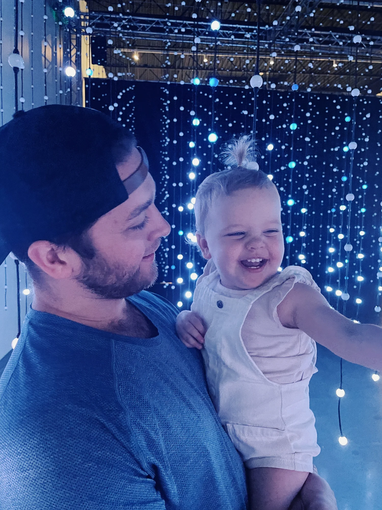
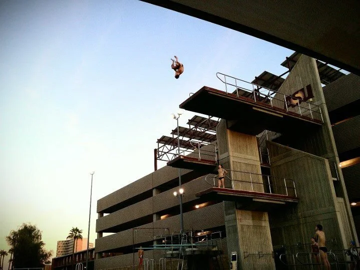
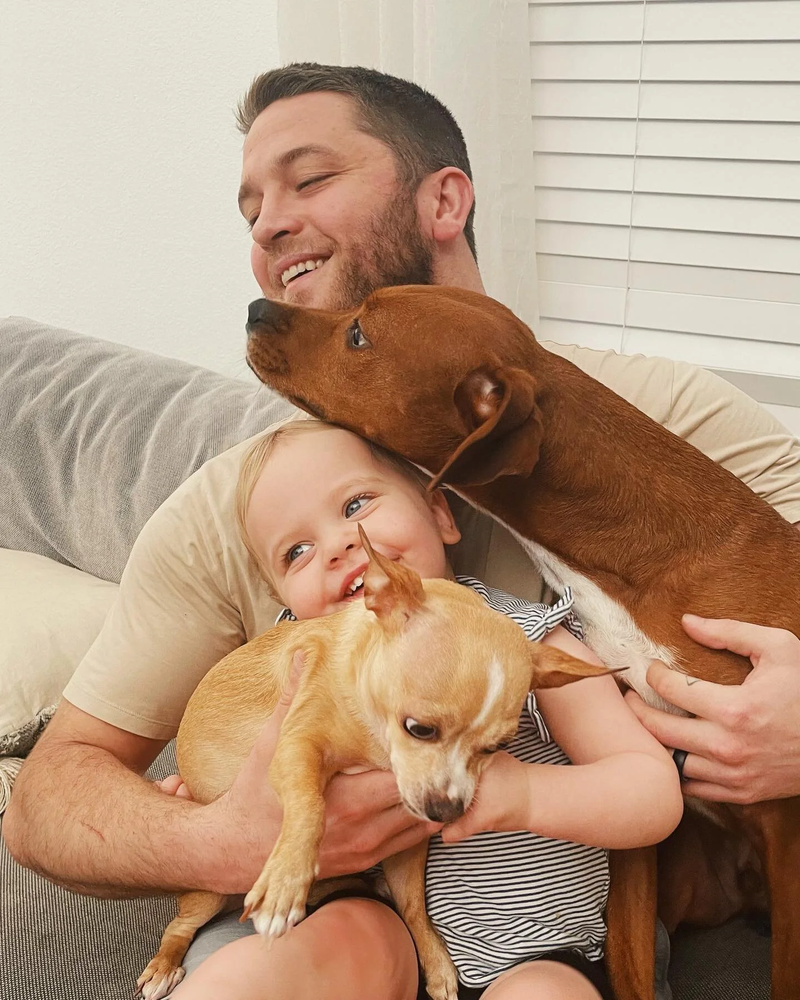
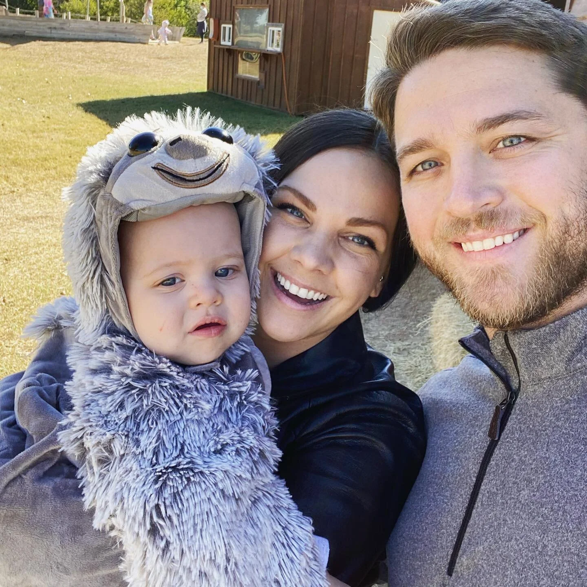

About The Bidak Group
Recruiting is drowning in automation. Sequenced InMails, “personalized” templates, résumé scanners rejecting people in milliseconds. Hiring got faster and somehow felt worse for everyone. The fix isn’t better software. It’s a person who actually listens: to what you’re building, to what a candidate is quietly hoping for, and to all the things a keyword search will never catch.
I’m ready to work with a humanMy Story
Hi, I’m Mike Bidak. I grew up in Phoenix, Arizona, and studied Psychology at Grand Canyon University, which turned out to be suspiciously good training for a career spent listening to what people actually mean.
In 2018, my wife and I packed up and moved to Austin, Texas. I do tech recruiting and she does social work, so between the two of us, humans are pretty well covered. These days our weekends are Austin BBQ, green trails, two daughters, and the dogs, usually in that order, occasionally all at once.
“Human HeadHunter” started as a joke on LinkedIn. Then candidates kept telling me it was the reason they picked up the phone, and it quietly became the whole philosophy.

My Mission
I listen to what you actually need, match on what actually fits, and champion both sides until the offer is signed, and after.

A Human Approach
My psychology degree never got framed and hung behind a therapist’s couch. It got put to work in recruiting instead. It taught me that people rarely lead with the real answer. The engineer who says they want more money often wants more ownership. The founder who asks for “a rockstar” usually needs a calm senior hand. You find that out by asking good questions and then actually listening to the answers.
So every search I run starts with people, not keywords. I learn your team, your codebase culture, and what success looks like six months in, before I ever type a search string. It’s slower for about a week and faster for the entire rest of the search.
Off the clock
- Diving | 15+ years competing across the US
- Snowboarding | Skateboarding | Basketball | Pickleball
- Rap music & groovy beats | Gaming
- Automation | anyone can automate, and everyone should
- And Rick and Morty!



Wouldn’t it be nice if hiring felt a little more human?
That’s the entire pitch, honestly. No dashboards to log into, no drip sequences, no “per my last email.” Just a person who picks up the phone, tells you the truth even when it’s inconvenient, and remembers what you said on the first call. If that sounds refreshing, we’re going to get along just fine.